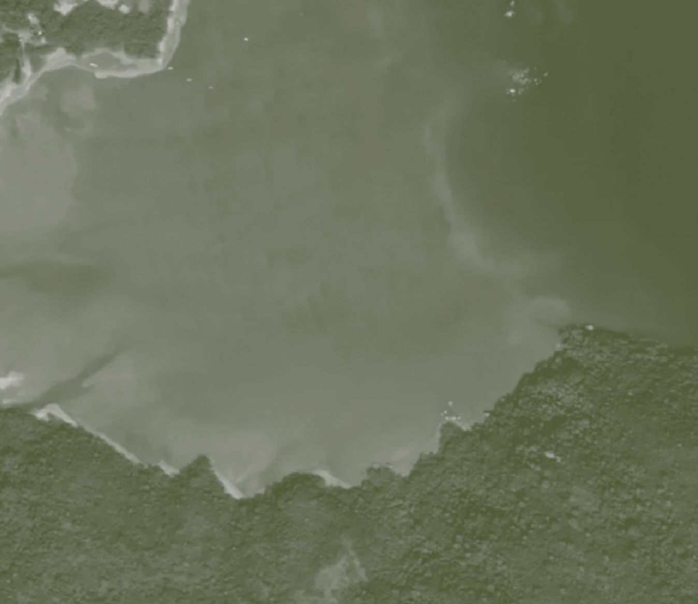
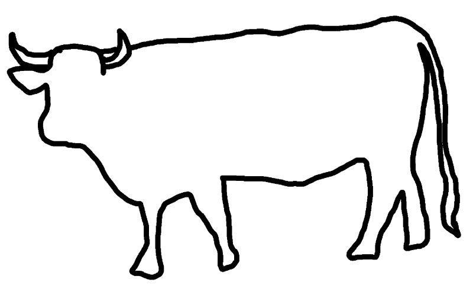
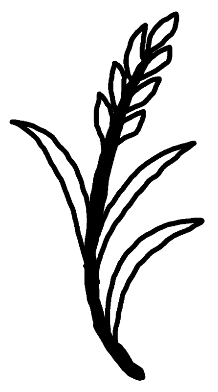
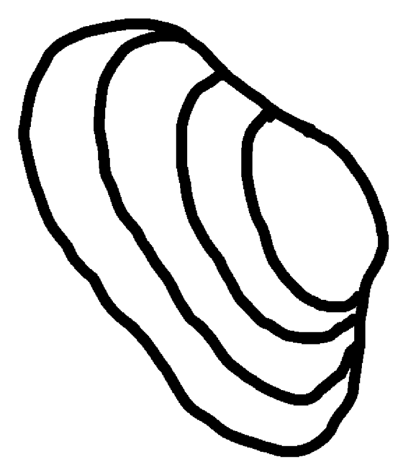
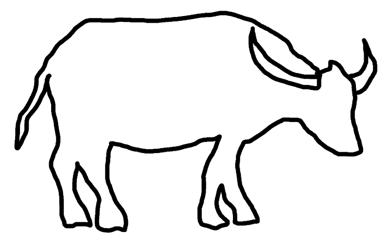

關於地圖
此數碼地圖邀請觀眾從人類、動物、植物與地景交織的故事，以新視角認識水口。
我們從村民聚焦訪談、生態研究資料和地景特色，選出水口較具代表性的物種：翅口（沙白）、水牛與黃牛，以及水稻。地圖上標誌着每個物種，連結至他／牠們最容易在水口被發現、記住，或能從地景中被理解的位置。觀眾點擊地圖上的標記後，便可觀看村民的口述故事、聆聽現場聲景、閱讀自然書寫，以及瀏覽紅外線相機拍攝的影像。
我們雖無法完全脫離人類視角，但從跨媒介紀錄、跨學科資料搜集和收集村民與多物種的生活經驗，嘗試探索、拓展感知人以外的物種，重新關注一些過往可能受忽略的、來自物種的敘事角度。
視覺化的地圖呈現出交錯相遇的物種出沒路線、互為補充或對話的資料，讓我們體會到水口的生物多樣性與人的生活，如何透過同一片土地、水源、活動與歷史變遷而被共同生成。然而，我們相信在水口這豐富生態環境中，悄然進行中的多物種互動不止於此，就有待與公眾一起發掘更多。
我們希望藉此地圖提出幾個問題：
- 當不同物種的故事在同一片土地上展開，它們會在哪裡相遇？
- 在水口，人與多物種以及地景是如何互相塑造？
- 如何洞察人與多物種以及地景互動，親身體會可感可知的自然？
- 我們（人類）在這多物種交織的環境中，該負起甚麼樣的責任？我們的行動決定會如何影響其他物種和地景？




